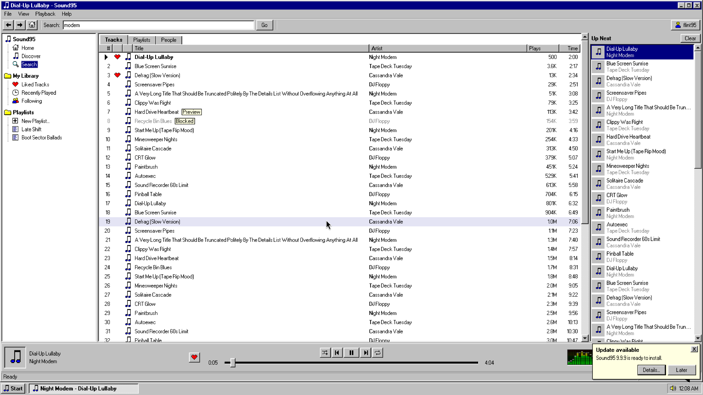

SoundCloud on your desktop. Built like it's 1995.
Sound95 takes SoundCloud out of the browser tab and into a real desktop app for Windows and Linux. Log in and your likes, playlists and follows are already there.
The latest version is Sound95 v0.4.0

Close the tab. Keep the music.
SoundCloud usually lives in a browser tab, somewhere behind everything else. Sound95 gives it a window of its own, a button on your taskbar and a player bar that stays put while you browse. It plays through SoundCloud's own player, so it's the same music and the same account.
Your whole library
Likes, playlists and follows live on SoundCloud, so they match the website and your phone.
Everything in view
Your library on the left, Up Next on the right and the player along the bottom, on every page.
Any window size
The layout folds down to fit a small window or a tiling tile, so it works as a corner player too.
Watch what you're hearing.
Spectrum, Oscilloscope, Mystify and Starfield, driven by the audio that's actually playing. This window runs the app's drawing code, listening to a small demo tune your browser makes itself. Press Play.
Sing over anything.
Sound95 finds lyrics for whatever plays and wipes through them in time. If a song only has plain text, the timing is a guess, and Tap to Sync lets you fix it by pressing Space as each line starts. Paste Lyrics covers the songs nobody has published words for.
The details.
| Name | What it does | |
|---|---|---|
| Track pages | Click a track's name or picture for its waveform, details, lyrics and related tracks, all inside the app. | |
| SoundCloud log in | You sign in on SoundCloud's own page, in a window of its own. There's nothing else to set up. | |
| Streams only | Music plays from SoundCloud. Sound95 stores no audio, credits uploaders and links back. | |
| Signed updates | Checks for a new version at startup and every six hours. An update that doesn't match the key built into the app is refused. | |
| No admin rights | The Windows installer and the Linux install script both install for your user only. | |
| Native app | Built with Tauri and Rust. It uses your system's web view rather than bundling a whole browser. | |
Questions.
Is Sound95 made by SoundCloud?
No. Sound95 is an independent project by FO4AN. It isn't affiliated with or endorsed by SoundCloud.
Is it free?
Yes. Sound95 is free to download and use.
Do I need a SoundCloud account?
Yes. Click Log In and sign in on SoundCloud's own page, in the window that opens. Sound95 has no account of its own.
Why does Windows warn me about the installer?
The installer isn't code signed yet, so SmartScreen may warn you. Choose More info, then Run anyway.
Can I download music or listen offline?
No. Sound95 streams from SoundCloud and keeps no copies of the audio.
What about macOS or my phone?
Sound95 runs on Windows 10 and 11 (64-bit) and x86-64 Linux. There's no macOS or phone version right now.
Could it stop working?
It could. Sound95 uses SoundCloud's website log in and website API, which SoundCloud doesn't officially support, so a change on their side could break it until an update lands.